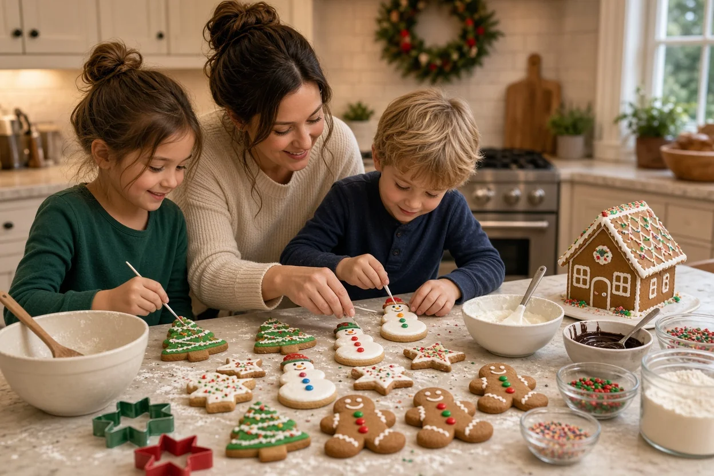

Christmas Traditions at Home
The preparations, activities, and family traditions that make Christmas memorable.
Click on a red link for an image search.
For many American families, the weeks leading up to Christmas are almost as exciting as the holiday itself. Homes become busier, kitchens fill with delicious smells, and children eagerly count down the days. Although every family has its own traditions, many households share similar activities that make Christmas a special time to spend together.
Getting Ready for Christmas
One popular way to count down to Christmas is with an Advent calendar. These calendars have small numbered doors, one for each day leading up to December 25. Children open one door each morning to discover a small chocolate, picture, or surprise.
Another important activity is putting up and decorating the Christmas tree. Some families choose a real tree from a Christmas tree farm, while others bring an artificial one out of storage. Once it is assembled, everyone can join in decorating it with ornaments, lights, ribbons, and other decorations. Many families have special ornaments that have been passed down through generations, making the activity even more meaningful.
Gift shopping is another major part of the preparations. Although Black Friday is the biggest shopping day of the year, it also marks the first shopping day of the holiday season. People continue to shop throughout December. Some are organized shoppers, finishing early, while others do last minute shopping on Christmas Eve! Once the presents have been purchased, they need to be wrapped, labeled with gift tags, and hidden away until Christmas morning.
Baking and Making Christmas Treats

The kitchen becomes one of the busiest places in the house during the holidays. Baking Christmas cookies is a favorite family activity. Sugar cookies are especially popular because they can be cut into different shapes, such as stars, Christmas trees, and snowmen. Children enjoy decorating them with colorful icing, sprinkles, and small candies.
Gingerbread is another holiday favorite. Families sometimes bake gingerbread men or make elaborate gingerbread houses decorated with frosting, gumdrops, and candy canes. Some people buy ready-made kits, making it easier for everyone to join in.
Other seasonal treats include homemade fudge, chocolate-covered candies, and a variety of pies and cakes. Candy canes are also popular, both as sweet treats and as decorations.
Christmas Eve
Christmas Eve, December 24, is often filled with excitement. Families may gather for a special dinner, attend a Christmas Eve church service, or simply spend a relaxing evening together. In some households, children are allowed to open one present before bedtime.
A particularly popular tradition is putting a plate of cookies and a glass of milk on the table for Santa Claus. Before going to bed, the children hang their Christmas stockings near the fireplace or another special place, hoping Santa will fill them with small gifts and treats.
Of course, getting children to sleep can be a challenge when they are so excited about the following morning!
Christmas Morning
For many children, Christmas morning is the most exciting part of the entire season. Some wake up early and rush to see what Santa has left under the tree. Others gather around the fireplace to open their stockings before the family begins exchanging presents.
There is usually plenty of excitement as people unwrap gifts, take photographs, and enjoy the surprises. Parents often record the moment to preserve the memories for years to come.
The Christmas Dinner
Christmas dinner is often the main family meal of the holiday. Many households serve roasted turkey or glazed ham, accompanied by mashed potatoes and gravy, stuffing, green beans, corn, cranberry sauce, and dinner rolls.
Dessert is another important part of the meal. Pumpkin pie, pecan pie, apple pie, cheesecake, and chocolate cake are common choices. Some families also serve Christmas cookies and other homemade sweets.
Popular holiday drinks include eggnog, hot chocolate, and warm apple cider. Whether the meal is large or simple, the most important part is often gathering around the table and enjoying time together.
For many families, these familiar activities are what make Christmas feel like Christmas. The presents may change, and the decorations may look different each year, but the traditions create memories that people look forward to repeating.